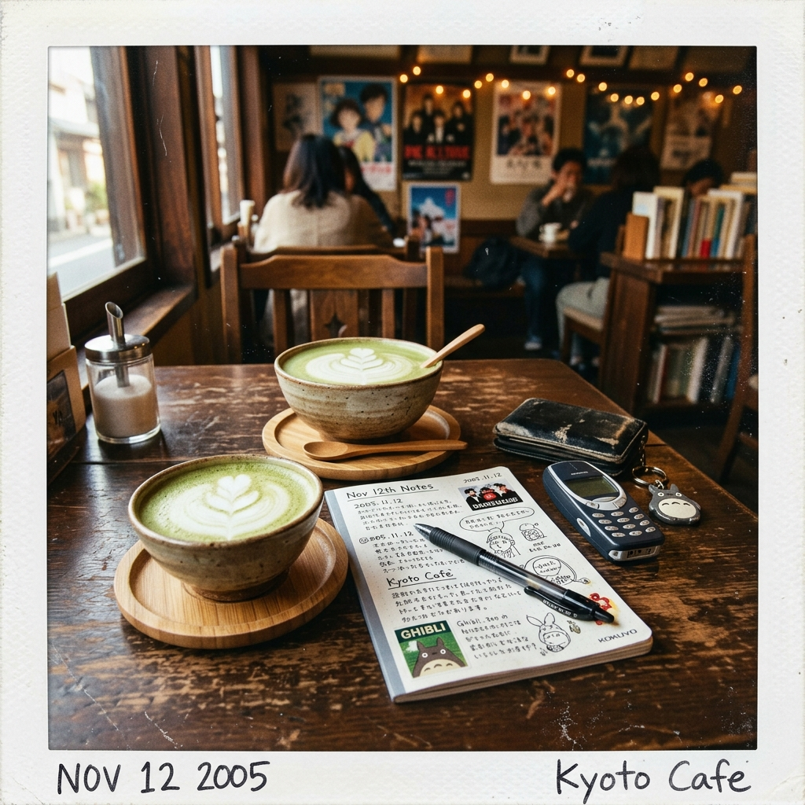
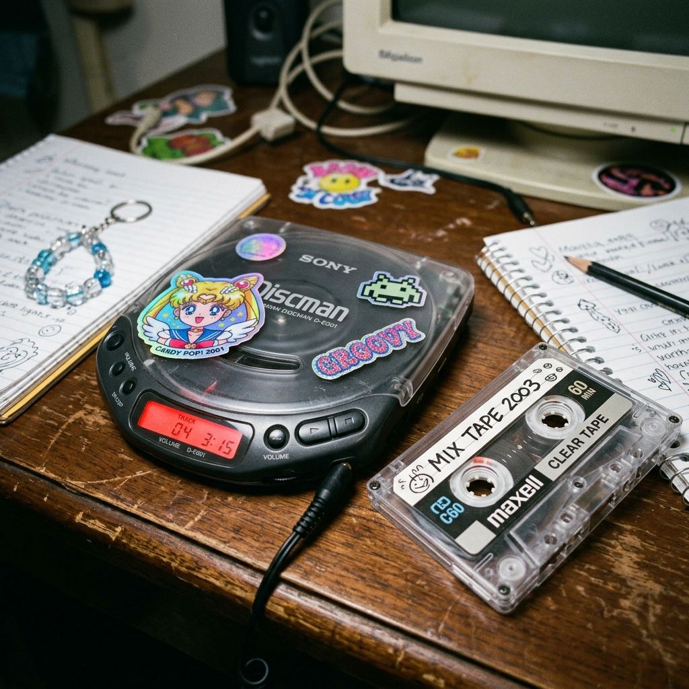
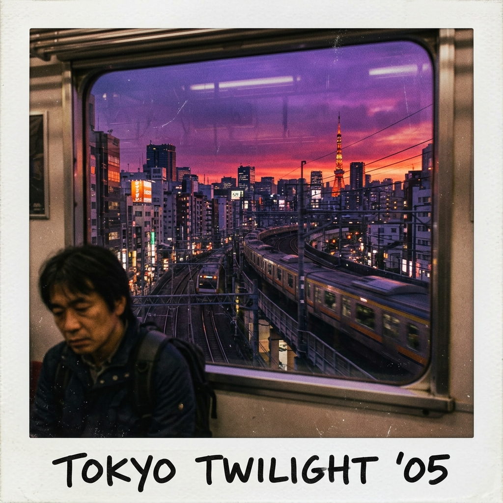
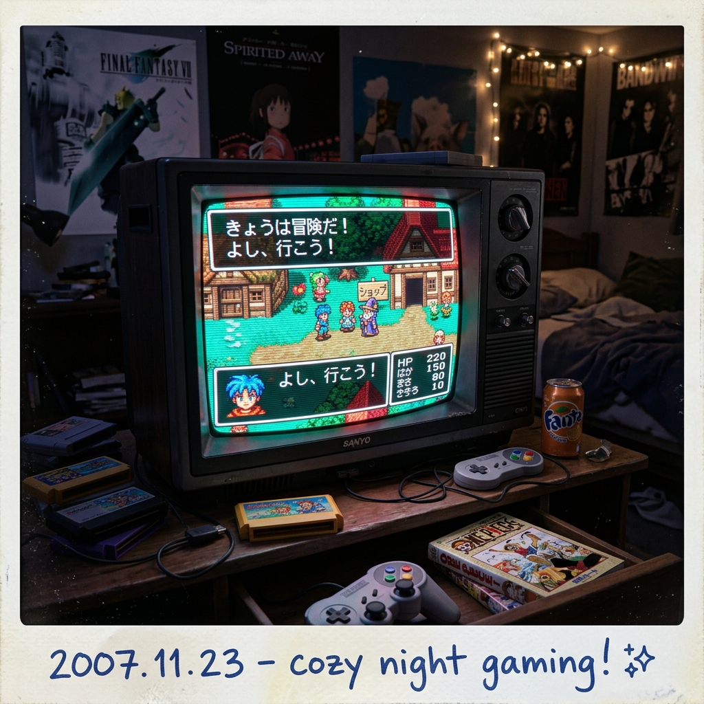

Bienvenido a mi espacio personal en la red. No es un portfolio corporativo ni una red social moderna: es una casa digital interactiva construida a mano, inspirada en las páginas web japonesas de la era 2005-2010.
- 2026.08.17 CANTO Rediseño Midnight Karaoke Booth 01 & layout estático implementado.
- 2026.08.16 MUSIC Añadido sintetizador interactivo Wah-Wah y tabla de canciones favoritas.
- 2026.08.14 JAPAN Nueva palabra del día en Shibuya y reproductor de Vivarium integrado.
- 2026.08.10 PORTAL Despliegue del blog personal con estética retro Y2K y reproductor global.
今日はカフェで音楽を聴きながらずっとここにいたかった。 a veces el internet se siente más como un hogar que cualquier otro lugar ♥
el internet era más bonito antes.
Había algo en las páginas de 2005 que no existe más. No era la estética solamente — era la intención. Cada sitio era la casa de alguien. Podías sentir a la persona detrás de cada GIF animado, cada contador de visitas, cada entrada de guestbook.
今はどこを見ても同じに見える。 Todo se ve igual ahora. Plantillas de Figma y componentes de React. Hermoso pero vacío.
Este sitio es mi intento de recuperar algo de eso. Un lugar que sea mío de verdad. ✦
LEER MÁS ▶
café de siempre
vibes del día
空が綺麗だった
crazy nights